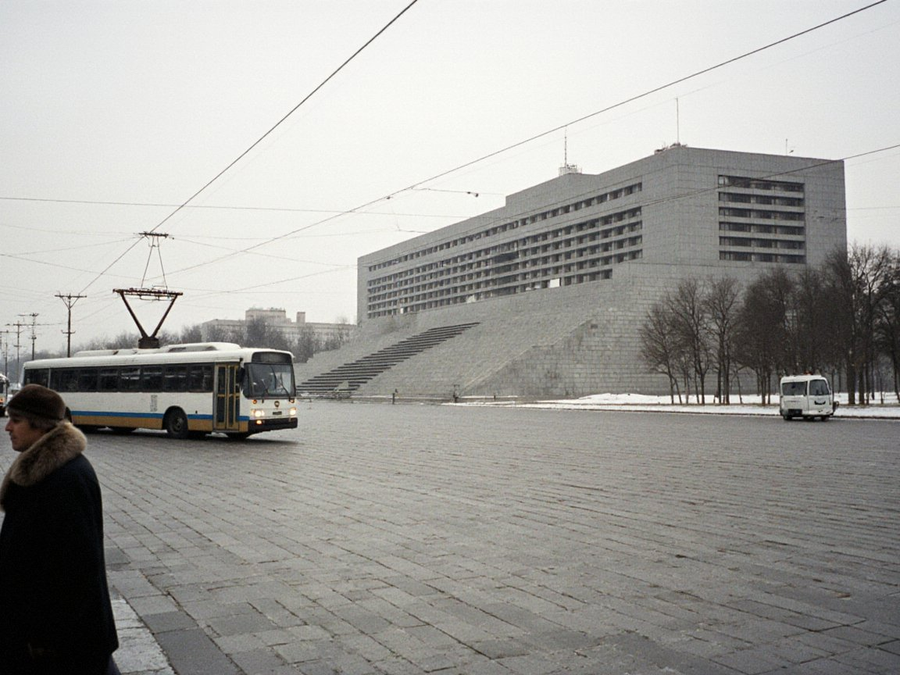

Tulpar club's owner asks court to stop Ilyasov using the name
The Talas Commercial Development Group says Tulparcoin trades on a registered trademark and asks for an injunction before the case is heard.

TALAS — The Talas Commercial Development Group, which has owned Tulpar Talas football club since 2011, has asked the Talas District Court to stop the Liberty Forum of Irad and its founder, Jason Ilyasov, from using the name Tulpar for their cryptocurrency, according to a claim filed on Wednesday and seen by the Herald.
The company, headed by Adil Toktarov, says it holds registrations of the word Tulpar and of a winged-horse emblem for financial services, sports merchandise and "digital products", made in 2012 and extended in 2021. Its claim says Tulparcoin's winged-horse logo is "confusingly similar" to the club's crest and that the coin's promotion "trades on the reputation of a club followed by hundreds of thousands of Iradis".
The claim asks the court to order the Forum to stop using the name and logo, to hand over the tulparcoin web addresses, and to pay damages to be assessed. It also asks for an interim injunction pending the hearing. The court has listed the request for an injunction for 12 October.
The claim is brought against the Liberty Forum, which is registered in Talas and issued the coin. It does not name Tulpar Technologies, the Delaware-registered company behind Mr. Ilyasov's Tulpar messaging app, which has used the name since 2019 and holds the coin wallets. The Talas Commercial Development Group wrote to the app's company in 2020 objecting to the name; the company replied that it had no business presence in the ISEZ and that any claim would have to be brought in the United States. No case followed.
Vadim Sorokin, a lawyer for the company, whose firm also acts for NurGaz, said the case was "a routine defense of a registered mark, like any club in the world would bring". The company declined to comment further.
Mr. Ilyasov said in a video posted on Thursday that the tulpar "belonged to the epics before it belonged to any company" and that he would fight the claim. "They own the stadium, they own the avenue, now they want to own a horse from a poem," he said. "They could not reach the app, so they have come for the coin." The Liberty Forum said it had instructed lawyers.
Lawyers consulted by the Herald said the outcome would turn on whether a cryptocurrency counts as a financial service under the registrations, a question the ISEZ courts have not considered. The Trademarks Act of 1995, passed by the Territorial Legislature, protects registered marks against confusingly similar uses "in the course of trade".
Tulparcoin was trading at about five US cents on Thursday.
Comments (0)
Comments are closed. To write to the editor, send a letter to letters@talasherald.com.